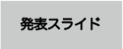
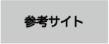

卒業研究課題


Web入門、Web応用、ゼミナールを通して、さまざまな技術や応用を学ぶことができました。
もう少し余裕がある状態で卒業を目指していたのですが、コロナウイルスの蔓延により本業が多忙となってしまいなかなか時間が取れずドタバタとした最後となってしまいました。
ディベートで質問やご意見を下さった皆様ありがとうございました。
今後も、さらに技術を身につけられるよう勉強の参考にさせていただきます。
短い間でしたがありがとうございました。